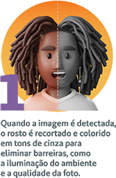
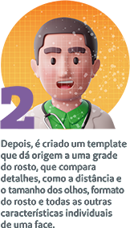

![O que é biometria facial? Sistema de análise profunda de imagem para identificar pessoas. Sabe quando você posta uma foto sua nas redes sociais e marca seus amigos nelas? Então, a biometria facial funciona, basicamente, do mesmo jeito. Essa tecnologia permite que todos os traços dos rostos sejam reconhecidos. Características únicas de cada pessoa, como a distância entre os olhos, cicatrizes, marcas de expressão, comprimento do nariz e curvatura dos lábios são lidos pelo sistema, evitando fraudes e falhas.](images/biometria.jpg)